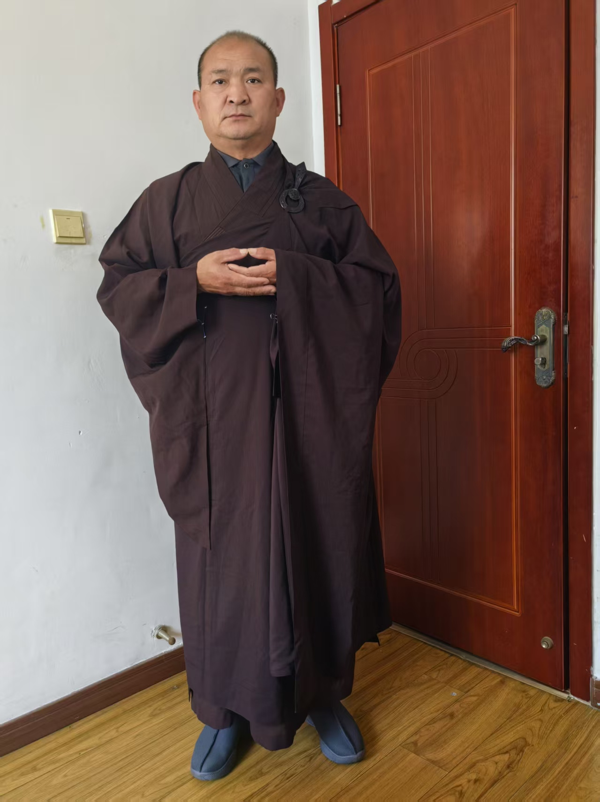

我让孩子带了心经金刚经

斋戒日，必穿法衣
让孩子给拍了几张
受戒折腾的，轻了三斤
师父[强][强][强]
走路就这样
手是法界定印
手心像托一尊佛
放在胸口略下
手跟身体成九十度
今天不是六斋日吗
整天穿
我打算一月持一天
今天（略）
[憨笑][憨笑]又要喝酒了
我在家闲着没事，可以整天穿着打坐，读经
出去肯定不能穿
受菩萨戒就是人间大菩萨
穿着感觉不错
师父庄严师[合十][合十][合十]
以后就改变自己，正式讲课就穿法衣
庄重庄严
我也反思自己
整天嘻嘻呵呵，吃喝玩乐，很多学生不够重视
犯了错，师傅化解一下
化解了，继续犯
人生苦短，再不用心修炼，命运也改不了，疾病上身，悔之晚矣
吃饭去
今天研二研究生来问
上学两年，在宿舍睡了一年半
感觉很颓废
求指点
我说，你要做好日常，就是休闲
有很多学生都在做实验，很累
这学生的导师是我选的
副院长 ，刚提升了正院长，除了带这十几个学生，喝酒，也没啥事
女院长
论文，我调理着，发了一篇，只有毕业论文了
不就闲着没事了
我说，自己列个表，
每日去学校健身房锻炼，
再请教一下导师，提前写毕业论文
我看着今年还能发三篇
学生说，导师说了，写一篇英文的奖励一万
这不就有活干了
学生阶段，父母供吃喝
学费，学校发的也够了
没事干 这是福分
很多人被逼着打工
别把休闲当颓废
就像我，每天没事干，
那是因为我提前干好了
吃吃喝喝，休闲
今天很自然的，读了六遍楞严咒
一会，这孩子请吃火锅，
过午不食就免了
[憨笑][憨笑][憨笑][憨笑]
我自己解释，是大斋戒
戒的是心
不是表
我让孩子带了心经金刚经
早上晚上读